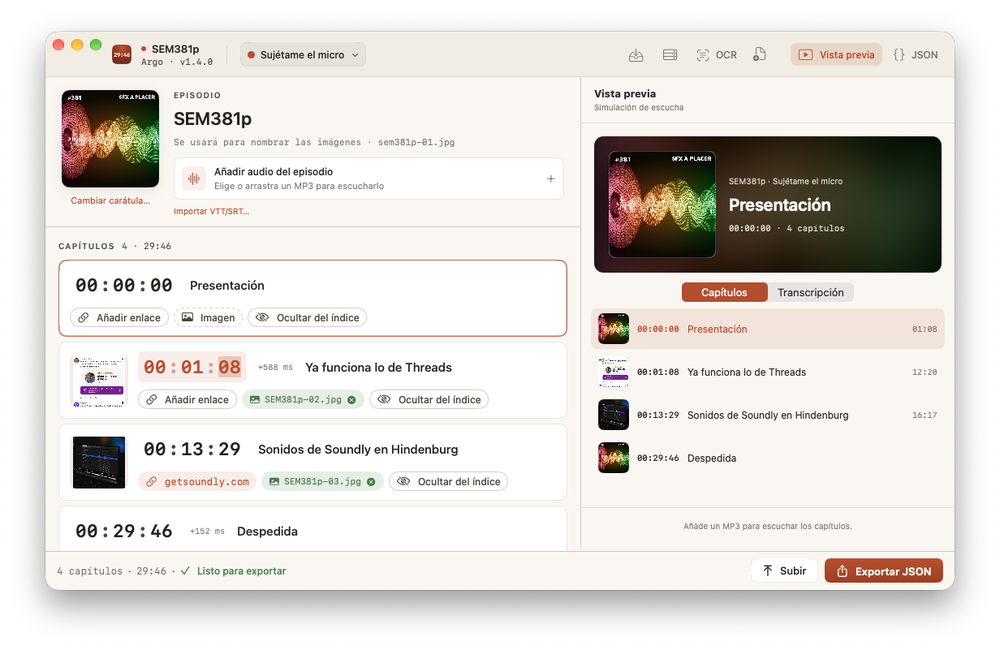

Importa o crea los capítulos de tu MP3 y, si no los lleva, incrústalos sin recodificar el audio. Revisa el episodio y transcríbelo con MacWhisper. Sube audio, carátula, transcripción, JSON e imágenes a tu servidor desde una misma app.

Empieza por el audio del episodio y prepara todo lo que lo acompaña, sin ir saltando entre herramientas.
Arrástralo a Argo o usa «Abrir con» desde Finder. Si ya contiene capítulos, Argo recupera sus tiempos, títulos, enlaces, imágenes y carátula. Si no, puedes crearlos tú.
Ajusta los tiempos mientras escuchas el audio. Revisa las imágenes y los enlaces en una simulación de escucha como la de una app de podcasts.
Elige qué archivos enviar al servidor. Si tu MP3 no lleva capítulos, puedes incrustarlos y subir esa nueva copia sin recodificar el audio. También puedes exportar el MP3 o el JSON.
Desde los capítulos que ya lleva el MP3 hasta la última imagen que verá quien lo escuche.
Recupera los capítulos incrustados con sus enlaces e imágenes. Conserva los milisegundos y edita lo que necesites sin modificar el audio original.
Escucha, salta entre capítulos y comprueba qué imagen y enlace aparecen en cada momento. Detecta una imagen equivocada antes de publicar.
Transcribe en segundo plano mientras preparas los capítulos. Requiere MacWhisper y su CLI instalados. También admite importar VTT y SRT.
Audio, carátula, transcripción, capítulos e imágenes: marca cada archivo que quieras enviar. Tú decides qué llega al servidor.
Arrastra la carátula y las imágenes de los capítulos. Las miniaturas se pueden ampliar para comprobarlas; Argo se encarga de nombrar los archivos al subirlos.
Guarda un destino FTP o SFTP por programa. Abre un JSON del servidor para corregir un episodio existente sin reconstruir sus capítulos desde cero.
También puedes empezar de otras formas. Crea los capítulos a mano, importa un JSON local o del servidor, o deja que el OCR lea una captura con tiempos y títulos.
Audio, carátula, transcripción, capítulos e imágenes: reúne todos los archivos del episodio y elige cuáles subir. Cada podcast conserva su propio destino FTP o SFTP.
Con MacWhisper y su CLI instalados, Argo puede iniciar la transcripción al abrir el MP3. Mientras avanza, tú preparas los capítulos. Actívalo en Ajustes → General o importa un VTT o SRT que ya tengas.
SEM381p.mp3Audio del episodioSEM381p.jpgCarátula del episodioSEM381p.vttTranscripciónSEM381p.jsonCapítulos de Podcasting 2.0SEM381p-02.jpgImágenes de los capítulosMarca o desmarca cada archivo antes de confirmar. El MP3 no se sube si no lo eliges.
{ "version": "1.0", "chapters": [ { "startTime": 21, "title": "Mi Steam Deck", "img": "https://emilcarfm.b-cdn.net/T9/WKL367-1.jpeg" }, { "startTime": 1115, "title": "Apple Store Covent Garden", "img": "https://emilcarfm.b-cdn.net/T9/WKL367-2.jpeg" } ] }
Una app nativa de macOS para preparar los capítulos y los archivos de tu podcast. Sin cuenta de Argo ni suscripción a Argo.
El registro de cambios de Argo: lo nuevo, lo que mejora y lo que se arregla en cada actualización.
Abre el MP3, prepara sus capítulos, revisa las imágenes y reúne los archivos para publicarlo. Todo desde Argo, en tu Mac.